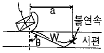
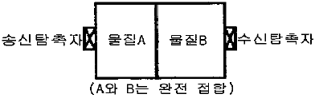
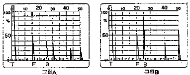

초음파비파괴검사기사 (2018-03-04 기출문제)
1과목: 비파괴검사 개론
1. 외경 30mm, 두께 2.5mm의 튜브를 직경 20mm인 코일이 감겨있는 내삽형 탐촉자로 와전류탐상시험할 때, 충전율은 얼마인가?
- 0.44
- 0.64
- 0.67
- 0.80
(정답률: 65%)

2. 다음 중 초음파탐상검사에서 결함을 가장 쉽게 검출할 수 있는 탐상시점은?
- 거친 다듬질 후
- 정밀 다듬질 후
- 표면이 거칠어지는 열처리 전
- 감쇠를 적게 할 수 있는 열처리 후
(정답률: 56%)
3. 다음 중 비파괴평가법과 그 기본원리인 연결이 잘못된 것은?
- 방사선투과검사-투과성
- 초음파탐상검사-펄스반사
- 와전류탐상검사-전자유도작용
- 중성자투과검사-탄성파
(정답률: 75%)
4. 자분 집적 모양의 식별성을 향상 시키기 위해 고려할 사항이 아닌 것은?
- 식별성은 백그라운드와의 대비에 의해 좌우되므로 형광자분을 사용할 때는 형광휘도가 낮은 것을 선택하여 사용해야 한다.
- 불연속부에 충분한 양의 자분이 흡착되도록 균일하게 자분을 적용해야 한다.
- 적정한 자화로 불연속부로부터 충분한 누설자속이 형성되도록 해야 한다.
- 관찰하기 편리한 환경에서 눈과 시험면의 거리를 두고 바른 관찰을 해야 한다.
(정답률: 74%)
5. 다음 중 방사선투과시험에서 X선 필름의 감도를 높이고 노출시간을 단축시키며, 상질을 개선하기 위해 사용되는 것은?
- 계조계
- 증감지
- 투과도계
- 필름관찰기
(정답률: 74%)
6. 백금(Pt)에 대한 설명으로 옳은 것은?
- 백금은 회백색의 체심입방정 금속이다.
- 비중은 6.7이고 용융점은 670℃ 정도이며 내식성이 좋으므로 화학공업에 사용한다.
- 백금은 산화되지 않으나 P, S, Si 등의 알칼리, 알칼리토금속의 염류에는 침식된다.
- 45%~85%Rh 합금은 열전대로 사용하며, 0.8%~5%Pd의 백금합금은 장식용으로 사용된다.
(정답률: 52%)
7. 고속도공구강(SKH2)의 대표적인 조성으로 옳은 것은?
- 18%Mo-4%W-1%Cr
- 18%Mo-4%Cr-1%Mn
- 18%W-4%Cr-1%V
- 18%W-4%Mo-1%V
(정답률: 54%)
8. 경도시험과 그 영문 표기가 틀린 것은?
- 쇼어 경도 : HS
- 비커즈 경도 : HV
- 브리넬 경도 : HB
- 로크웰 경도 : HL
(정답률: 69%)
9. 희토류 원소 또는 Th 첨가로 크리프 특성, 내열성 및 주조성이 좋아 제트엔진(Jet engine) 등의 구조용 재료로 가장 많이 사용되는 합금은?
- Al 합금
- Mg 합금
- Ni 합금
- Zn 합금
(정답률: 55%)
10. 냉간가공된 금속에 대한 설명으로 틀린 것은?
- 냉간가공으로 금속결정 내의 전위는 감소한다.
- 융점이 낮은 금속에서는 가공 후 가열하지 않고 실온에 방치만하여도 회복이 일어난다.
- 냉간가공된 금속을 어닐링하면 회복, 재결정, 결정립성장의 단계를 거친다.
- 냉간가공으로 변형된 금속을 가열하면 그 내부에 새로운 결정립의 핵이 생기고 이것이 성장하여 변형이 없는 결정립으로 치환되는 과정을 재결정이라고 한다.
(정답률: 53%)
11. 절삭성을 높이기 위한 쾌삭 황동(free cutting brass)은 황동에 어떤 원소를 1.0~3.5% 정도 첨가시킨 합금인가?
- P
- Si
- Sb
- Pb
(정답률: 50%)
12. 금속을 원자로용, 고융점 구조재료, 반도체, 알칼리토류군(群)으로 분류할 때 반도체군에 해당되는 것은?
- W, Re
- Na, Li
- Ge, Si
- U, Th
(정답률: 61%)
13. 재료시험법 중 동적시험에 해당되는 것은?
- 인장시험(Tensile test)
- 충격시험(Impact test)
- 전단시험(Shearing test)
- 압축시험(Compression test)
(정답률: 61%)
14. 항온열처리인 마퀜칭(Marquenching)처리를 한 후 얻어지는 조직은?
- 펄라이트
- 마텐자이트
- 베리나이트
- 투루스타이트
(정답률: 68%)
15. Al-Cu 합금을 용체화처리한 다음 급냉한 후 시효처리할 때 석출되는 금속간화합물은?
- Cu2O
- CuAl2
- CO2Al
- Al2O3
(정답률: 74%)
16. 일반적인 서브머지드 아크 용접에 대한 설명으로 옳은 것은?
- 용입 깊이가 얕다.
- 사용 용접전류가 적어 용접능률이 낮다.
- 아크가 눈에 보이므로 용접상태를 확인하면서 용접할 수 있다.
- 용접선이 길고, 연속용접이 가능한 부재에 적용하는 것이 적합하다.
(정답률: 57%)
17. 10분의 용접작업 중 6분 동안 아크를 발생시키고, 4분 동안 아크를 발생시키지 않고 쉬었다면, 이 용접기의 사용율은?
- 20%
- 40%
- 60%
- 100%
(정답률: 74%)
18. 금속 중에서 용접 입열이 일정한 경우에 열전도율이 큰 순서로 나열한 것 중 옳은 것은?
- 구리＞알루미늄＞스테인리스강
- 연강＞스테인리스강＞알루미늄
- 스테인리스강＞구리＞알루미늄
- 알루미늄＞스테인리스강＞구리
(정답률: 58%)
19. 용접작업에서 피닝(peening)을 실시하는 목적으로 옳은 것은?
- 슬래그를 제거하고 용접부의 강도를 높인다.
- 소성가공에 의한 용접부의 경도를 증가시킨다.
- 가공경화에 따른 용접부의 인성을 증가시킨다.
- 비드 표면층에 성질 변화를 주어 용접부의 인장 잔류 응력을 완화시킨다.
(정답률: 64%)
20. 일반적인 플라스마 아크 용접의 특징으로 틀린 것은?
- 용접속도가 빠르다.
- 용접비드의 폭이 넓다.
- 열에너지의 집중이 좋다.
- 각종 재료의 용접이 가능하다.
(정답률: 42%)
2과목: 초음파탐상검사 원리
21. 주단조품의 조직과 감쇠의 임상에코에 대한 설명 중 틀린 것은?
- 결정입자에 의한 초음파의 산란에 의해 생기는 것이다.
- 플라스틱(plastic)도 결정입자가 크므로 임상에코가 크다.
- 결정입자가 적을수록 임상에코도 적어진다.
- 결정입자가 적을수록 감쇠도 적어진다.
(정답률: 69%)
22. 초음파탐상검사에서 결함의 분해능에 가장 큰 영향을 미치는 인자는?
- 탐촉자의 직경
- 주파수
- 입사각
- 탐촉자의 초점거리
(정답률: 62%)
23. 초음파탐상시험의 분산각에 대한 설명으로 틀린 것은?
- 파장이 감소하면 빔 분산각도 감소한다.
- 진동자의 직경이 감소하면 빔 분산각도 감소한다.
- 주파수가 증가하면 빔 분산각은 감소한다.
- 속도가 증가하면 빔 분산각도 커진다.
(정답률: 49%)
24. 초음파탐상검사 시 결함에서 반사되어 나온 에너지의 변화와 무관한 인자는?
- 결함의 크기
- 결함의 방향
- 결함의 형태
- 결함발생 시기
(정답률: 85%)
25. SH 사각 횡파(horizontally shear)의 특징에 대한 설명 중 틀린 것은?
- SH파는 반사면에서 모드 변환이 없고 탐상도형이 간단하여 판정이 용이하다.
- SH파의 파면은 진행방향에 평행하다.
- SH파는 초음파가 탐상면과 수평방향으로 진동하면서 진행하는 횡파이다.
- SH파 탐상에는 횡파 전용의 점성이 높은 접촉매질을 사용해야 한다.
(정답률: 43%)
26. 단강품의 초음파탐상검사에서 최적 탐상방법의 선정항목이 아닌 것은?
- 검사시기
- 감쇠계수의 측정과 보정방법
- 결함의 길이
- 탐상방향
(정답률: 41%)
27. 탐상기의 성능에 대한 설명 중 입력신호에 대한 출력신호의 관계가 어느 정도 비례관계가 있는가를 나타내는 것은?
- 시간축직선성
- 증폭직선성
- 수신기의 주파수특성
- 분해능
(정답률: 52%)
28. 초음파탐상검사에서 초음파를 발생시키는 원리는?
- 압전 효과
- 전압 효과
- 전류 효과
- 진동 효과
(정답률: 79%)
29. 탄소강(음향 임피던스Z1)의 한쪽에 스테인리스강(음향 임피던스Z2)을 결합했을 때 탄소강 측으로부터 2MHz로 수직 탐상을 했다. 경계면에서의 음압반사율은?
- (Z2-Z1)/(Z1+Z2)
- (Z1-Z2)2/(Z2+Z1)
- {(Z1-Z2)/(Z2+Z1)}2
- 2Z2/(Z1+Z2)
(정답률: 70%)
30. 초음파탐상검사에서 수직탐상 시 시험편방식에 의한 감도조정에 관한 설명으로 옳은 것은?
- 감쇠가 적은 시험체에만 적용할 수 있다.
- 시험체의 탐상면과 저면이 평행하지 않으면 적용할 수 없다.
- 감쇠가 큰 시험체일 때 결함을 과소평가할 우려가 있다.
- 시험체의 탐상면의 거칠기에 영향을 받지 않는다.
(정답률: 65%)
31. 용접부 초음파탐상검사 시 모재두께 25mm, 굴절각이 70˚인 탐촉자로 탐상한 결과 결함에 대한 빔행정이 58.5mm 이었다면 이 결함의 깊이는 몇 mm인가?
- 8.5
- 14.9
- 20.0
- 24.9
(정답률: 45%)
32. 초음파 탐촉자의 성능점검 항목이 아닌 것은?
- 접근 한계 길이
- 불감대
- 치우침각(편각)
- 분해능
(정답률: 31%)
33. 강 용접부의 초음파탐상시험에서 2탐촉자의 주사방법이 아닌 것은?
- 탠덤주사
- 두갈래주사
- 투과주사
- 지그재그주사
(정답률: 74%)
34. 그림에서 불연속의 위치를 결정하고자 한다. a=WsinΘ 공식의 인자가 아닌 것은?

- 입사점
- 굴절각
- 빔행정거리
- 시험편의 두께
(정답률: 56%)
35. 다음 중 감쇠가 가장 많이 일어난 초음파는?
- 종파
- 횡파
- 표면파
- 모든파 동일
(정답률: 56%)
36. 전위운동, 점성, 마찰, 탄성변환 및 분산 등의 원인에 대한 설명으로 옳은 것은?
- 감쇠
- 굴절
- 빔 분산
- 포화
(정답률: 62%)
37. 그림과 같은 투과법을 이용한 초음파탐상검사시 수신되는 음압이 가장 큰 물질로 조합된 것은? (단, 물질A의 음향임피던스 : ZA, 물질 B의 음향임피던스 : ZB이다.)

- ZA=10kg/m2ㆍs, ZB=1kg/m2ㆍs
- ZA=9kg/m2ㆍs, ZB=2kg/m2ㆍs
- ZA=8kg/m2ㆍs, ZB=3kg/m2ㆍs
- ZA=7kg/m2ㆍs, ZB=4kg/m2ㆍs
(정답률: 56%)
38. 높은 큐리점으로 고온사용에 이용하는 탐촉자 재질은?
- 수정
- 황산리튬
- 니오비움산납
- 니오비움산 리튬
(정답률: 55%)
39. 초음파탐상검사에서 용접부검사 시 발생되는 결함이 아닌 것은?
- 슬래그 혼입(Slag Inclusion)
- 텅스텐계 혼입(Tungsten Inclusion)
- 융합불량(Lack of Fusion)
- 모래혼입(Sand Inclusion)
(정답률: 70%)
40. 음향 임피던스가 서로 다른 물질의 경계면에서 일으키는 물리적인 현상이 아닌 것은?
- 굴절
- 반사
- 투과
- 회절
(정답률: 60%)
3과목: 초음파탐상검사 시험
41. 초음파탐상시험 시 용접한 철판 내부의 용입영역에 평행하게 있는 결함의 탐상에 가장 좋은 방법은?
- 표면파를 사용한 접촉 경사각 탐상
- 종파를 사용한 수직 접촉법
- 표면파를 사용한 수침법
- 횡파를 사용한 경사각 탐상
(정답률: 70%)
42. 에코간의 사이를 넓어지고 좁아지게 하는 조절기는?
- 게이트 폭(Gate width) 조절기
- 소인지연(Sweep delay) 조절기
- 측정범위(Sweep length) 조절기
- 음속 조정(Velocity controller)
(정답률: 44%)
43. 초음파탐상시험 시 공진법으로 측정이 불가능 한 것은?
- 두께 측정
- 깊이 측정
- 결함 검출
- 탄성률 측정
(정답률: 80%)
44. 결함의 크기가 같아도 위치에 따라서 표시되는 에코의 크기가 달라지는데, 동일 크기의 거리에 관계없이 같은 에코 높이를 갖도록 전기적으로 보상해 주는 방법은?
- 거리진폭보상
- 증폭직진성보상
- 시간거리보상
- 시간축 직진성보상
(정답률: 44%)
45. 산란파의 에코가 탐촉자에 되돌아와 나타나는 에코와 관련이 없는 것은?
- 주파수
- 파장
- 결정입자의 직경
- 재질의 고유음속
(정답률: 35%)
46. 초음파탐상에 의한 결함높이 측정방법 중 에코 높이를 이용하는 방법으로 틀린 것은?
- 산란파법
- 탠덤탐상법
- 모드변환법
- 단층탐상법
(정답률: 49%)
47. 탐촉자의 성능측정 방법으로 구성된 것은?
- 증폭의 직선설, CRT 크기, 빔폭
- 접근한계길이, 원거리분해능, CRT 크기
- 증폭의 직선성, 분해능, 시간측의 직선성
- 불감대, 빔중심축, 감도 여유값
(정답률: 76%)
48. 방해 에코오서 결정입계에 주로 발생되며 오스테나이트계 스테인리스강 용접부를 고감도로 탐상할 때 많이 나타나는 에코는?
- 잔향에코
- 임상에코
- 결정에코
- 쐐기내에코
(정답률: 57%)
49. 광대역형 탐촉자의 설명으로 틀린 것은?
- 진폭의 지속횟수가 매우적은 초음파펄스를 송수신하는 탐촉자이다.
- 얇은판 탐상이나 두께측정에 주로 사용한다.
- 조직이 조대한 재료의 탐상에 유리하다.
- 임상에코가 크기 때문에 S/N비가 개선된다.
(정답률: 54%)
50. 결함에코 높이가 비교적 낮고 폭이 좁은 특성이 있으며, 전자주사를 하거나 반대쪽에서 주시를 하여도 거의 일정한 펄스 강도를 나타냈다면 검출된 결함은?
- 균열
- 기공
- 융합불량
- 슬래그 혼입
(정답률: 54%)
51. 결정입자가 조대한 조직의 금속재료를 초음파탐상검사 할 때 초음파의 감쇠를 줄이기 위한 방법으로 가장 적합한 것은?
- 탐상 주파수를 높인다.
- 횡파 전용 탐촉자로 탐상한다.
- 접촉법에서 수침법으로 검사 방법을 변경한다.
- 열처리를 하여 조직을 미세화시킨 후 검사한다.
(정답률: 64%)
52. 초음파탐상검사를 할 때 동일한 위치에 결함 2개가 브라운관상에서 명확히 분리되어 나타났다. 어떠한 성능이 우수한 것인가?
- 감도
- 증폭직선성
- 시간축직선성
- 방위분해능
(정답률: 60%)
53. 초음파탐상검사를 할 때 탐상면에 접촉매질을 적용하는 가장 큰 이유는?
- 탐촉자의 소모를 방지하여 위하여
- 탐촉자의 마모를 방지하여 위하여
- 탐촉자의 움직임을 원활히 하기 위하여
- 초음파의 전달효율을 좋게 하기 위하여
(정답률: 75%)
54. 강판의 초음파탐상검사에 대한 설명 중 옳은 것은?
- 강판의 건전부에서는 저면에코만이 나타나며 라미네이션이 존재하면 다중반사에 의한 에코가 나타난다.
- 강판의 미소결함의 크기측정에는 6dB drop법의 적용이 유효하다.
- 전몰수침법에 음향렌즈를 사용할 경우 미세한 결함의 검출력이 저하된다.
- 탐상면에 평행한 결함의 검출에는 텐덤법에 의한 경사각탐상이 유효하다.
(정답률: 59%)
55. 강(steel)으로 제작된 시험체를 수침법을 이용하여 검사하고자 한다. 두께 1인치, 5MHz 수직탐촉자를 사용하여 검사할 경우 물거리(탐촉자-시험체 표면간 거리)는 약 얼마인가? (단, 시험체 종파속도 : 5900m/sec, 횡파속도 : 3230m/sec이며 물의 음속 : 1500m/sec이다.)
- 1/2인치
- 1인치
- 2인치
- 5/2인치
(정답률: 59%)
56. 알루미늄 용접부를 펄스반사법을 이용하여 경사각탐상을 할 때 측정범위를 조정하기 위하여 STB-A7963(Miniature Block)표준시험편을 사용했다. 초음파 빔의 방향이 곡률반경 25mm 쪽 곡면을 향하였을 때 나타나는 에코가 틀린 것은?
- 25mm 위치의 에코
- 50mm 위치의 에코
- 100mm 위치의 에코
- 175mm 위치의 에코
(정답률: 44%)
57. 대비시험편 RB-4를 이용하여 탐상감도 조정을 위한 에코높이 구분선을 작성할 때 탐촉자의 위치로 틀린 것은?
- 3/8 S
- 4/8 S
- 7.8 S
- 9/8 S
(정답률: 48%)
58. 동일 두께 단강품의 시험체를 건전부의 저면에코높이 100$로 탐상하였더니 그림 A, B와 같은 탐상도형이 얻어졌다. 옳은 설명은?

- 양쪽의 F에코가 같기 때문에 결함크기도 거의 동일하다.
- 양쪽의 F에코는 같으나 결함까지의 거리가 다르기 때문에 그림 B의 결함이 크다.
- 그림 A의 F/BF가 크기 때문에 A의 결함이 크다.
- 그림A의 BF가 작기 때문에 A의 결함이 작다.
(정답률: 55%)
59. 초음파 탐촉자에 사용되는 압전재료들 중 송신효율이 가장 우수한 것은?
- 황산리튬
- 티탄산바륨
- 지르콘산납
- 니오비움산납
(정답률: 78%)
60. 결함 길이의 산정을 위해 초음파 빔 끝단부의 강도가 빔 중심축 강도의 10%로 떨어지는 결함위치의 감도를 이용하는 방법은?
- 20dB 드롭법
- 10dB 드롭법
- 6dB 드롭법
- DGS 선도법
(정답률: 53%)
4과목: 초음파탐상검사 규격
61. 보일러 및 압력용기에 대한 표준초음파탐상검사(ASME Sec.V, Art.23 SA-609) 중 절차 A 평저공 교정 절차에서 탐촉자의 주파수 범위는?
- 0.5~2MHz
- 0.5~5MHz
- 0.5~10MHz
- 0.5~15MHz
(정답률: 60%)
62. 초음파탐상 시험용 표준시험편(KS B 0831) 중 G형 표준시험편의 사용목적에 관한 설명으로 옳은 것은?
- 시각 탐촉자의 입사점, 굴절각, 측정범위, 탐상각도 조정
- 사각탐촉자의 탐상감도 조정, DAC작성, 불감대, 분해능 측정
- 수직탐상으로 감도 조정, 수직탐촉자의 특성측정, 탐상기의 종합 성능 측정
- 수직탐상으로 감도 조정, 불감대, 측정범위조정
(정답률: 48%)
63. 초음파탐상장치의 성능측정 방법(KS B ⑤34)에서 신호원으로 표준 시험편을 사용하지 않아도 되는 것은?
- 증폭 직선성
- 시간축 직선성
- 수직 탐상의 감도 여유값
- 경사각 탐상의 감도
(정답률: 18%)
64. 강 용접부의 초음파탐상 시험 방법(KS B 0896)에 따라 곡률 반지름이 100mm인 시험체의 원둘레 이음 용접부를 탐상하는 경우에 사용할 수 있는 대비시험편 및 탐촉자 접촉면의 곡률 반지름 범위로 옳은 것은?
- 대비시험편 : 90~150mm, 탐촉자 : 90~150mm
- 대비시험편 : 110~200mm, 탐촉자 : 110~200mm
- 대비시험편 : 110~200mm, 탐촉자 : 90~150mm
- 대비시험편 : 90~150mm, 탐촉자 : 110~200mm
(정답률: 35%)
65. 강 용접부의 초음파탐상 시험 방법(KS B 0896)에서 탐상기에 필요한 기능에 관한 설명으로 옳지 않은 것은?
- 게인 조정기는 1스템 1dB이하에서, 합계 조정량은 30dB이상을 가진 것으로 한다.
- 게이트 범위는 10mm~250mm(횡파)의 범위에서 임의로 설정할 수 있어야 한다.
- 경보 레벨은 표시기의 세로축 눈금 위 20%~80%의 범위에서 임의로 설정 할 수 있어야 한다.
- DAC회로를 내장하는 탐상기에는 DAC 회로의 스위치, SAC의 기점 및 경사를 조정하는 기능을 가진 것으로 한다.
(정답률: 53%)
66. 강 용접부의 초음파탐상 시험 방법(KS B 0896)에서 탐상장치 중 경사각 탐촉자의 성능 점검을 할 때 특별한 보수를 하지 않은 상태에서 작업개시 및 작업시간 8시간 이내마다 수행하는 점검 항목으로 옳은 것은?
- 불감대
- 빔 중심축의 치우침
- 입사점 및 굴절각
- 경사각 탐촉자의 감도
(정답률: 42%)
67. 알루미늄의 맞대기용접부의 초음파경사각탐상 시험방법(KS B 0897)에 따라 두께 24mm와 두께 30mm 의 두 판을 맞대기 완전용입 용접부탐상 결과 길이 6mm의 지시를 검출하였다. 이때 A종에 의한 지시의 분류는 어떻게 되는가?
- 1류
- 2류
- 3류
- 4류
(정답률: 25%)
68. 보일러 및 압력용기에 대한 표준초음파탐상검사(ASME Sec.V, Art.4)에서 규정하고 있는 진동자 주사 방향의 일반적인 중첩 정도로 옳은 것은?
- 진동자 제적의 최소 5%
- 진동자 제적의 최소 10%
- 진동자 면적의 최소 5%
- 진동자 면적의 최소 10%
(정답률: 52%)
69. 보일러 및 압력용기에 대한 표준초음파탐상검사(ASME Sec.V, Art.5)에서 디지털형 초음파탐상 장치의 직선설 점검 최대 주기는 얼마인가?
- 1개월
- 2개월
- 3개월
- 12개월
(정답률: 46%)
70. 보일러 및 압력용기에 대한 표준초음파탐상검사(ASME Sec.V, Art.23 SA-435)에 따라 지시를 판정할 때 다음 중 합격 판정을 내릴 수 있는 것은?
- 지름 75mm의 지시에코와 저면 반사가 소실했을 때
- 강판 두께의 3/4의 지시에코와 저면 반사가 소실했을 때
- 지시에코의 지름이 50mm이고 저면반사가 소실했을 때
- 지시의 길이가 평판두께와 같고 저면반사가 소실했을 때
(정답률: 43%)
71. 강 용접부의 초음파탐상 시험 방법(KS B 0896)에서 모재 두께가 15mm인 맞대기 용접부를 탐상한 결과, M 검출 레벨에서 흠의 최대 에코 높이가 제 I영역에 해당하고 지시의 길이가 20mm인 것이 1개 검출되었다. 이 용접부의 시험결과 분류로 옳은 것은?
- 1류
- 2류
- 3류
- 4류
(정답률: 45%)
72. 압력용기 제작기준 규격 강제 부록(ASME Sec. Ⅷ Div.1 App.12)에서 두께가 각각 25mm와 50mm인 평판의 맞대기 용접부를 초음파탐상한 결과, 다음과 같은 지시가 검출되었다. 다음 중 불합격인 결함으로 옳은 것은?
- 참조기준(reference level)의 50%에 해당하는 6mm 슬래그
- 참조기준(reference level)의 50%에 해당하는 7mm 기공
- 참조기준(reference level)의 50%에 해당하는 6mm 융합부족
- 참조기준(reference level)의 50%에 해당하는 5mm 기공
(정답률: 60%)
73. 초음파탐상 시험용 표준시험편(KS B 0831)에 따른 초음파 탐상용 G형 표준시험편 중에서 STB-G, V15-4에서 12의 설명으로 옳은 것은?
- 평저공(flat bottomed hole)의 직경이 15mm이다.
- 평저공 반대편(탐상면)에서 평저공 바닥까지의 길이가 15mm이다.
- 평저공 반대편(탐상면)에서 평저공 바닥까지의 길이가 150mm이다.
- 시편의 총 길이가 150mm이다.
(정답률: 53%)
74. 보일러 및 압력용기에 대한 표준초음파탐상검사(ASME Sec.V, Art.5)에서 거리진폭곡선 교정 후 시험할 때 몇 %를 초과하는 모든 불완전부를 조사하는가?
- 20%
- 30%
- 50%
- 60%
(정답률: 68%)
75. 보일러 및 압력용기에 대한 초음파탐상검사(ASME Sec.V Art.4)에서 거리진폭 특성곡선을 설정하여 실제검사를 하다가 DAC Curve 확인 결과, 진폭이 2dB이상 감소되었음을 알았다. 이 경우 취하여야 할 조치로 맞는 것은?
- 그동안의 검사는 유효하나 거리진폭특성곡선은 수정해야 한다.
- 최종 유효한 교정 점검이후 기록된 검사 데이터는 무효로 하고 재검사해야 한다.
- DAC Curve 및 검사결과가 모두 유효하다.
- 기록된 지시에 대해서만 다시 DAC Curve 설정 후 재검사해야 한다.
(정답률: 69%)
76. 건축용 강판 및 평강의 초음파탐상시험에 따른 등급 분류와 판정기준(KS D 0040)에서 강판을 탐상할 경우 탐상부위로 옳은 것은?
- 200mm 피치의 압연 방향 선을 탐상선으로 한다.
- 300mm 피치의 압연 방향과 수직인 선을 탐상선으로 한다.
- 100mm 피치의 압연 방향선을 탐상선으로 한다.
- 100mm 피치의 압연 방향과 수직인 선을 탐상선으로 한다.
(정답률: 25%)
77. 압력용기 제작기준 규격 강제 부록(ASME Sec. Ⅷ Div.1 App.12)에 따라 두께 15mm의 용접부에 대하여 검출된 지시가 참조 레벨을 초과하고 균열, 융합불량 또는 용입부족이 아니라고 판정된 경우에 허용할 수 있는 최대 지시 길이로 옳은 것은?
- 길이는 관계가 없다.
- 6mm
- 8mm
- 18mm
(정답률: 59%)
78. 강 용접부의 초음파탐상 시험 방법(KS B 0896)에서 탐상장치 영역구분의 결정을 위한 경사각 탐상 에코높이 구분선 작성의 설명으로 옳은 것은?
- M선은 H선보다 6dB 낮다.
- L선은 M선보다 6dB 높다.
- H선의 높이는 스크린 높이의 50% 이하가 되어서는 안된다.
- 에코높이 구분선의 영역구분은 3개로 한다.
(정답률: 60%)
79. 강 용접부의 초음파탐상 시험 방법(KS B 0896)에서 대비시험편 RB-4에 대한 설명으로 틀린 것은?
- 대비시험편 길이는 사용하는 빔 노정에 따라 정한다.
- 시험체의 두께가 25mm 이하일 때
- 대비시험편은 시험체 또는 시험체와 초음파특성이 비슷한 강재로 한다.
- 표면 상태는 시험체와 비교하기 위하여 항상 매끄럽게 연마되어져 있어야 한다.
(정답률: 48%)
80. 강 용접부의 초음파탐상 시험 방법(KS B 0896)에서 탐촉자에 필요한 시험 주파수는 공칭 주파수의 몇 % 범위인가?
- 60~100%
- 90~110%
- 90~100%
- 80~110%
(정답률: 50%)
따라서, 내삽형 탐촉자가 감지할 수 있는 전류의 부피는 다음과 같습니다.
부피 = 파이 x (감지 깊이)^2 x 코일의 길이
= 3.14 x (10mm)^2 x 30mm
= 9420mm^3
내삽형 탐촉자의 부피는 다음과 같습니다.
부피 = 파이 x (탐촉자 반지름)^2 x 탐촉자 길이
= 3.14 x (20mm/2)^2 x 30mm
= 9420mm^3
따라서, 내삽형 탐촉자가 감지할 수 있는 전류의 부피와 탐촉자의 부피가 같으므로 충전율은 1입니다.
하지만, 실제로는 내삽형 탐촉자가 감지할 수 있는 전류의 부피보다 작은 부피만이 충전됩니다. 이는 내삽형 탐촉자의 감지 깊이가 실제로는 10mm보다 작기 때문입니다.
따라서, 충전율은 내삽형 탐촉자가 감지할 수 있는 전류의 부피와 탐촉자의 부피의 비율로 계산됩니다.
충전율 = (부피 / 내삽형 탐촉자 부피)
= (9420mm^3 / 9420mm^3)
= 1
하지만, 이 값은 실제 충전율보다 높은 값입니다. 따라서, 이 값을 보정해주어야 합니다.
실제 충전율은 대략 0.64 정도가 됩니다. 이 값은 내삽형 탐촉자의 감지 깊이가 6mm 정도라고 가정했을 때 계산된 값입니다.
따라서, 정답은 "0.64"입니다.